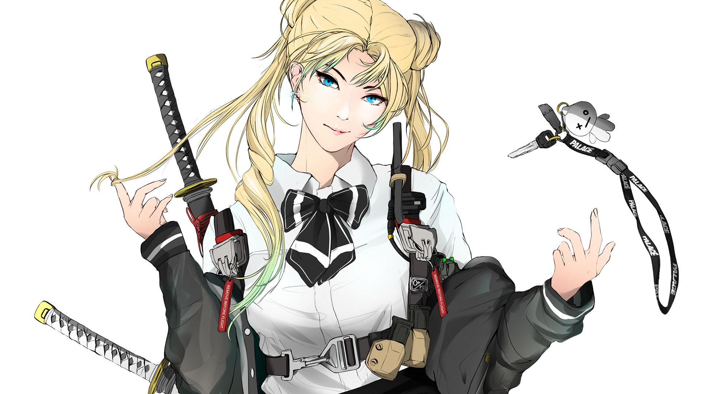

飛行前に撤去してください
Illustration
Photoshop
PROCESS
Accessories and fashions are meant to invoke feelings of nostalgia in long time fans of the series. For example, Minako Aino aka. Sailor Senshi Venus's passion for volleyball is reflected in her design.
PROCESS
I gave special attention to capturing the essence of each character through careful research of their backstories in the Sailor Moon animated and manga series by Naoko Takeuchi.

PROCESS
The style of the illustration draws heavily on the cell shaded aesthetic of 90's Japanese animated series. I wanted the characters to have a clear visual reference to their original anime artistic style while having a more modern day spin through more realistic body proportions, fashions, and technology.

PROCESS
Incorporating the original Naoko Takeuchi's idea of astrology, I created a logo for each Senshi based on their astrological sign. Graphic design styleframes were also created as a framework for subsequent product designs and graphic design work. Considerations for font choice included a need for futuristic simplicity.
PROCESS
In close collaboration with Brandon Bautista of KawaiiSauce, I helped create stickers and prints of each Sailor Senshi in different cuts and crops. These stickers are often applied to skateboards and cars.
PROCESS
The process of making apparel features film to print process of transferring artwork onto clothing. Specific characters or concepts are imagined by Brandon, and through a series of sketches and revisions we decide on final art to make graphic designs of the illustrations for use in merchandise. This collaborative process results in the apparel designs below, featuring key visuals from styleboards.
PROCESS
For social media campaign I leveraged Instagram's swipe feature to slowly reveal more and more of the scene and each character's personality with each slide. The final slide features a notable quote from each character meant to inspire nostalgia for those familiar with the anime series.